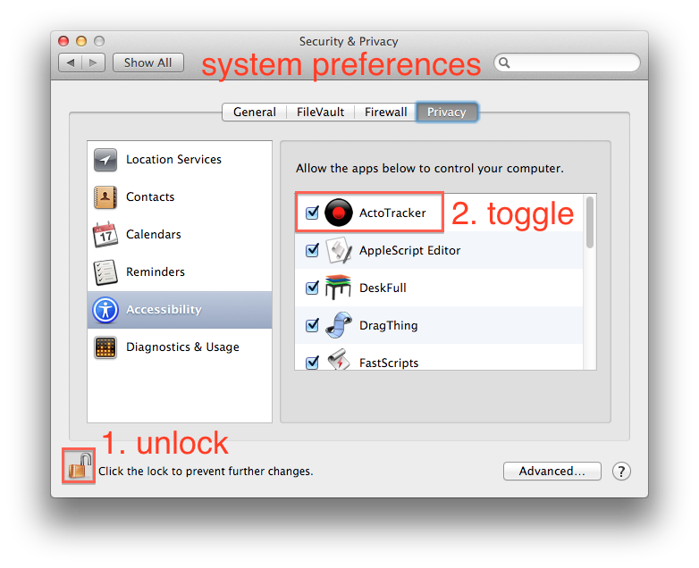

Enable UI Scripting Access LinCastor may require UI Scripting to be enabled for AppleScript actions to work correctly. The UI Scripting is OS X mechanism that enables one application to request information about any other application and has been primarily designed for use by accessibility tools such as screen readers. This is obviously very powerful and useful feature to have available. Tactor uses it to extract selected text for example. However, it is also exposes potential security issue and that is why OS X doesn’t enable it without user’s explicit permission. And the Mavericks makes it especially cumbersome. To enable UI Scripting on the Mavericks do following:

- go to the System Preferences, Security & Privacy
- unlock the settings (it will ask you for your password)
- go to Accessibility
- make sure the application in question is enabled
NOTE: you will have to go through this procedure every time you update the app! I am not sure whether this is Mavericks bug or not but sometimes you will need to disable and then re-enable an application to work correctly.